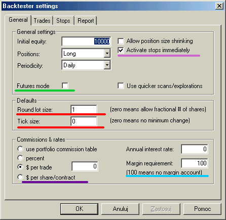
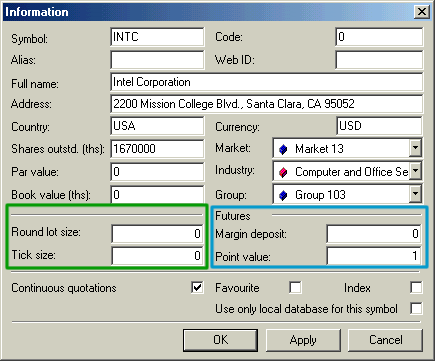

Introduction
Before reading this article, you should first read "Backtesting your trading ideas" section as it provides the necessary background on backtesting in general.
When you open a long position in stocks, you simply buy a given number of shares at a given price. Then, after some time, you sell them, and your profit is given by the difference between the sell and buy price multiplied by the number of shares. If you want to open a long position on a futures contract, you pay a deposit—a margin—for each contract. The margin is just a small part of the full contract value (for example, 10%). So you can buy 10 contracts, paying no more than the full value of one contract. This provides leverage, which makes trading futures more risky than trading stocks. When the price of the contract changes, your profit/loss changes accordingly. If a contract's point value is 1, each $1 change in contract price represents $1 profit/loss per contract, like in stocks. But futures can have a point value different from 1. If, for example, the point value is 5, each 1-point change in the price of the contract represents a $5 profit/loss in your equity. When you close a position, you get the margin deposit back, so your profit/loss is given by the number of contracts multiplied by the point value multiplied by the difference between sell and buy prices.
Futures mode of the backtester
There are 3 futures-only settings in the backtester:

The Futures mode checkbox on the settings page (underscored with a green line in the picture above) is key to backtesting futures. It instructs the backtester to use margin deposit and point value in calculations.
The remaining settings are per-symbol and are accessible from the Symbol->Information window.

Margin deposit
The margin is the amount of money required to open a single contract position. You can specify a per-symbol margin on the Symbol-Information page (picture above). Positive values describe the margin value in dollars, while negative values express the margin value as a percentage of the contract price. A margin value of zero is used for stocks (no margin). Margin can also be specified in the formula by using the MarginDeposit reserved variable:
MarginDeposit = 675;
In Futures mode, the margin setting is used to determine how many contracts can be purchased. Let's suppose that your initial equity is set to $50,000 and you want to invest up to 20% of your equity in a single trade, and the margin deposit is $675. In that case, your "desired" position size is 50,000 * 0.2 = 10,000. Provided that you have set round lot size to 1, the backtester will "buy" 10000/675 = (integer)14.8148 = 14 contracts, and the true position value will be $9450 (18.9% of the initial equity).
To simulate this in AmiBroker, you would need to enter 50,000 in the Initial Equity field in the backtester, switch on Futures mode, and set up the remaining parameters in your formula:
PositionSize = -20; // use 20% of equity
MarginDeposit = 675; // this you can set also in the Symbol-Information page
RoundLotSize = 1; // this you can set also in the Settings page
All further trades will use the same logic, but the position will be sized according to current cumulative equity instead of initial equity level, unless you specify fixed position size in your formula (e.g., PositionSize = 10000).
Point value
Point value is a per-symbol setting (definable in the Symbol-Information window, picture above) that determines the amount of profit generated by one contract for a one-point increase in price. Example: copper is quoted in cents per pound. A price quote of 84.65 (or 8465) equals 84 cents and 65/100ths of a cent per pound. A change of +.37 or 37 represents 37/100ths of a cent; you will normally hear it quoted as 37 points. But because the point value for copper is 2.5, every point change gives a $2.5 profit/loss, so in this example, the profit/loss for the day would be 2.5 * 37 = $92.50.
You can also set it from the formula level using the PointValue reserved variable, for example:
PointValue = 2.5;
Note: When you load an old database, AmiBroker presets the point value field to 1 and assumes that by default, 1 point represents one dollar, so a one-dollar change gives a one-dollar profit/loss. This is done to ensure that you get correct results even if you (by mistake) run a Futures mode test on stocks.
Note 2: Although the point value setting affects (multiplies) profits/losses, it does NOT affect built-in stops. The stops ALWAYS operate on price movement alone. So you should be aware that setting a 10% profit target stop will result in 25% profit on a trade exited by this stop when point value is set to 2.5.
Simple cases
Points-only test
A points-only test is equivalent to trading just one contract. This can be easily accomplished using the Futures mode of the backtester and adding the following single line to your formula:
PositionSize = MarginDeposit = 1;
Trading 'n' contracts
In a similar way, you can set up your formula so it always trades, say, 7 contracts. All you need to do is add the following to your formula:
NumContracts = 7;
PositionSize = NumContracts * MarginDeposit;